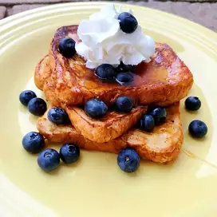

lasagna

height=20%
width=40%
describing the recipe
Deliciously lemony without being overly tart,
these decadent French toast slices are sweet, tasty,
and easy to whip up for a last minute breakfast.
Ingredients
- ⅓ cup half-and-half
- 5 large egg whites
- 2 tablespoons confectioners' sugar
- 2 tablespoons brown sugar
- 6 slices bread
steps
- Combine half-and-half, egg whites, confectioners' sugar, brown sugar, vanilla,
lemon extract, and salt in a bowl; whip together with a whisk or electric whisk
until well blended, about 30 seconds. Pour mixture into a large, flat container
- Put one bread slice in the container and flip so it is coated on both sides,
almost saturated.
- Melt 1 tablespoon butter in a frying pan over medium heat until sizzling.
Add soaked bread slice to the pan; you can do more than one depending on the size
of the pan. Fry until medium brown and edges are crispy, about 1 1/2 minutes per side.
Continue cooking in batches, dipping bread and frying, and adding butter
- Serve French toast with maple syrup and add whipped cream on top